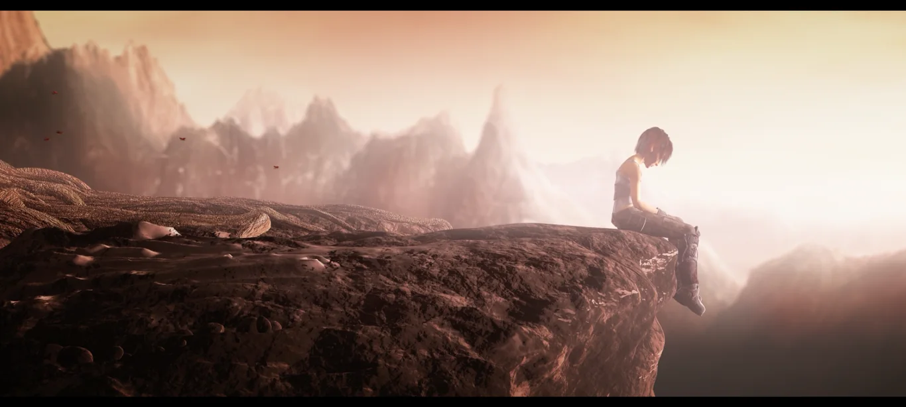
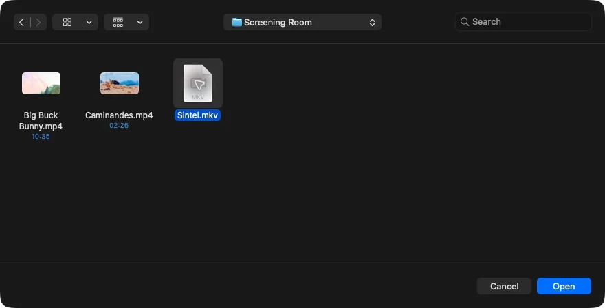
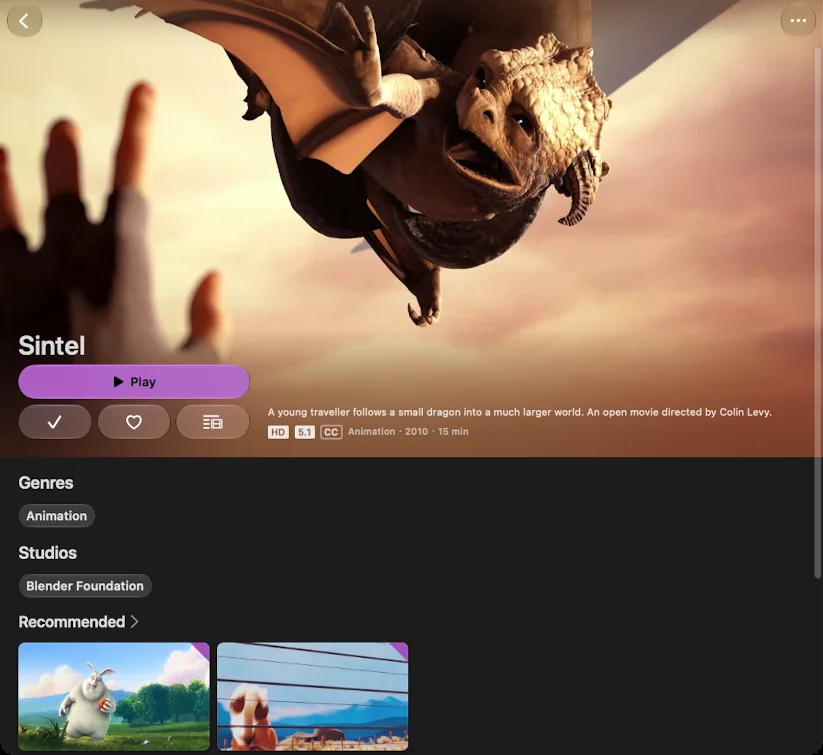
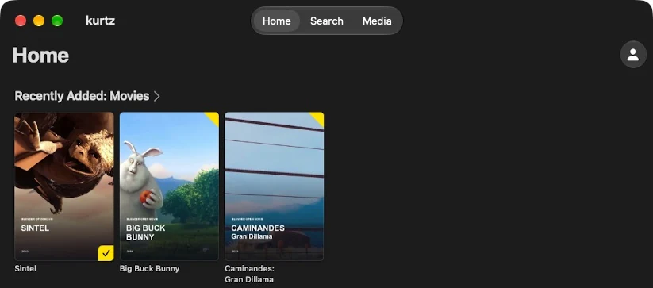
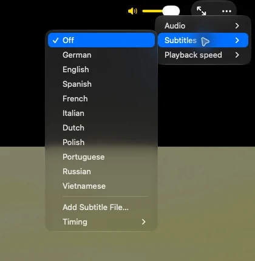

Available · Mac beta
Mac
Local files and your Jellyfin library. macOS 15.6 or later, on Apple silicon and Intel.
Download for MacYour Apple devices. With Jellyfin built in.
Your files. Your Jellyfin library.
Vela on Mac. Coming to iPhone, iPad and Apple TV.
Mac: free & open source · 0.9.5 beta · macOS 15.6+
See availability on every platform

One Vela. Platform by platform.
Available · Mac beta
Local files and your Jellyfin library. macOS 15.6 or later, on Apple silicon and Intel.
Download for MacIn development
Open videos from Files, keep your place, choose subtitles and connect Jellyfin. Targeting iOS and iPadOS 18.6 or later.
App Store release in preparation. No public download or TestFlight invite yet.
Release in preparation
Vela's Jellyfin library and player experience, with language presets and episode prompts. tvOS 26.1 or later.
Source builds are available. No App Store release yet. Local files are not supported on Apple TV.
The screenshots and download below show the current Mac release. Mobile and TV releases still need device qualification and Apple review. Windows and Linux are not supported. Follow release preparation.
An MKV in Downloads. A film on your Jellyfin server. Different places, same plan for the evening.
Watching a video shouldn't start with choosing an app. Vela brings local playback and a full Jellyfin client together, so you can get on with watching.
Your files
Choose a video in Finder's Open With menu, use ⌘ O, or drop it into Vela. No account. No server. Just the file you wanted to play.
Make Vela the default for a format in Finder, and a double-click is enough.

Your Jellyfin library
Your server has a home here, too. Browse your library, open a film's detail page and carry on where you stopped.
The same player, with the Jellyfin client foundation that made Vela possible.


02 / Room for the film
Seek to a scene. Choose a track. Then let the controls fade.
Pick the right audio track. Turn subtitles on. Adjust the speed. Go fullscreen. Come back to your local video where you left it.
These aren't extraordinary requests. They are the details a player should take care of.

Local history
stays on your Mac.
Remembered files, positions and track choices. Clear or switch off history in Settings.
Use a floating mini player when you want to keep watching alongside something else.
04 / A good place to start
Swiftfin and its contributors built a native Apple Jellyfin client worth building on. Vela is a fork of that work.
The library, the client foundation, the player lineage: that credit belongs in the story. Vela adds local-file playback on Mac and is bringing that workflow to iPhone and iPad, alongside its Jellyfin experience on Apple TV.
Meet Swiftfin and its contributorsVela is an independent project. It is not an official Jellyfin or Swiftfin application, and is not endorsed by those projects.
The whole app is free
No subscription. No in-app purchases. No Pro unlock.
Vela is free and open source. This is the whole app.
Start here
Vela 0.9.5 Beta brings your local files and Jellyfin library into the same Mac player. Download the universal disk image, then drag Vela into Applications.
Developer-ID signed and notarized by Apple. For Apple silicon and Intel Macs running macOS 15.6 or later. Vela is beta software. Building from source is also supported.
macOS 15.6 or later. One universal DMG for Apple silicon and Intel. Built with Mac Catalyst; shown here on Apple silicon.
Vela's Jellyfin experience for tvOS 26.1+. Source builds are available; the App Store release is in preparation. See the platform overview for iPhone and iPad status.
VLC is the default local engine; mpv is the alternative. Format support varies. The floating mini player is separate from system Picture-in-Picture.
Read the verified status